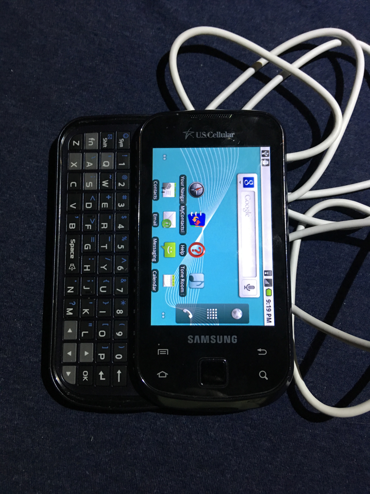

Samsung Acclaim

samsung-sch-r880
|
| Manufacturer |
Samsung |
| Name |
Acclaim |
| Codename |
samsung-sch-r880 |
| Released |
2012 |
| Category |
testing |
| Original software |
Android 2.2 Linux 2.6.32.9 (Minimum 2.1) |
| Hardware |
|---|
| Chipset |
Samsung S3C6410 |
| CPU |
800 MHz ARM11 |
| GPU |
FIMG 3DSE |
| Display |
320x480 TFT LCD |
| Storage |
512(?) MB / 216 MB available to user |
| Memory |
256(?) MB |
| Architecture |
armhf |
|
Features
| USB Networking |
|
| Flashing |
|
| Touchscreen |
|
| Display |
|
| WiFi |
|
| FDE |
|
| Mainline |
|
| Battery |
|
| 3D Acceleration |
|
| Audio |
|
| Bluetooth |
|
| Camera |
|
| GPS |
|
| Mobile data |
|
| SMS |
|
| Calls |
|
| USB OTG |
|
| NFC |
|
|
Sensors
| Accelerometer |
|
| Magnetometer |
|
| Ambient Light |
|
| Proximity |
|
| Hall Effect |
|
|
Contributors
- TechEdison
- Cupcake1972/Hacker420
Maintainer(s)
Status
- Device can be rooted
- Partition map discovered
- boot.img pulled from BML4
- Using a port of Linux 3.0.100 for the Galaxy Spica (same chipset)
Kernel fails to compile during linking- Kernel compiles.
See warning below.
- Cannot reboot into download mode via key combo (only using adb)
- Cannot flash using Heimdall
- Flashing via Odin may work but I was unsuccessful
--NO FURTHER TESTING DONE AT THIS POINT
I have given up on this phone for now. Don't have the time to manage it.
Errors/Warnings
I bricked my initial board trying to flash the kernel using a flasher app (same one used for custom recovery). It now freezes at the SAMSUNG logo when powered on and does nothing else. My backup board runs Android 2.1 and won't permanent root successfully.
BML Partition Map Definition
Discovered using Binwalk
# cat /proc/partitions
major minor #blocks name
179 0 7761920 mmcblk0 - SD Card
179 1 7757824 mmcblk0p1 - SD Card partition 0
137 0 513280 bml0/c - All BML partitions
137 1 128 bml1 - Copyright string: "Copyright (C) SAMSUNG Corporation 2006-2009"
137 2 1280 bml2 - Various PNG, JPEG, and TIFF files. Probably boot animation.
137 3 384 bml3 - One PNG image, 320 x 480. Probably boot logo
137 4 6400 bml4 - boot.img
137 5 153600 bml5 - /system
137 6 226816 bml6 - /data
137 7 118272 bml7 - /cache
137 8 6400 bml8 - boot.img backup
138 5 150948 stl5 - /system
138 6 223020 stl6 - /data
138 7 116172 stl7 - /cache
See also
Partition mapping info
Kernel being used
Specific kernel config
Open source driver for the GPU (might be used later)
Tool used to root the phone
{kind=link}